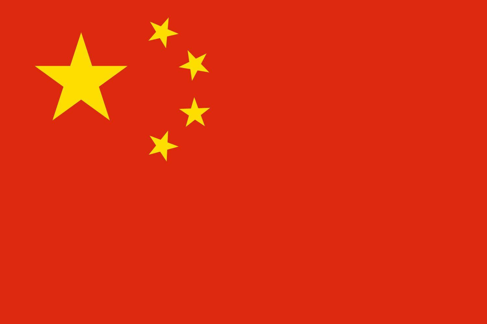
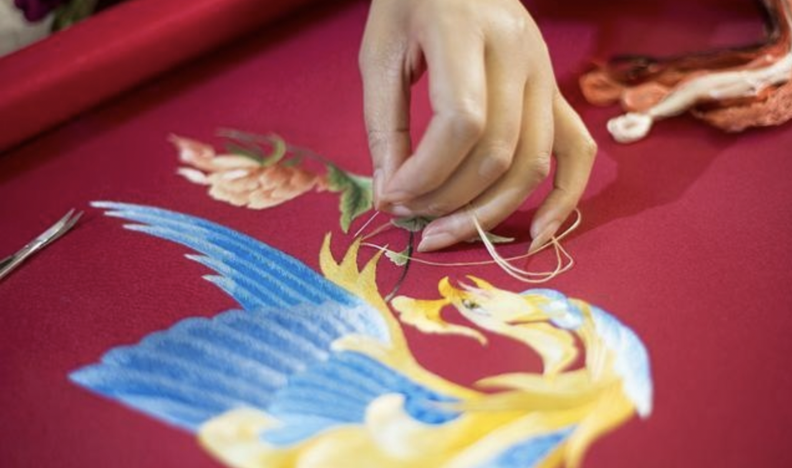
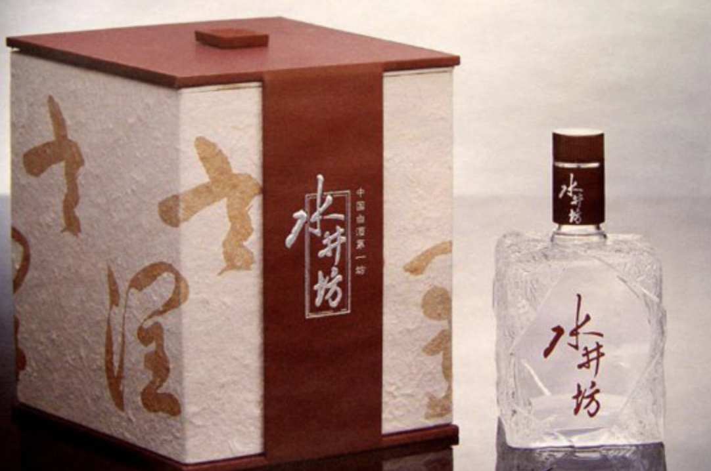
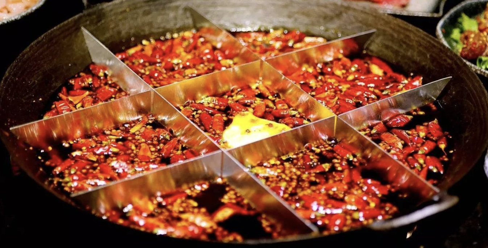
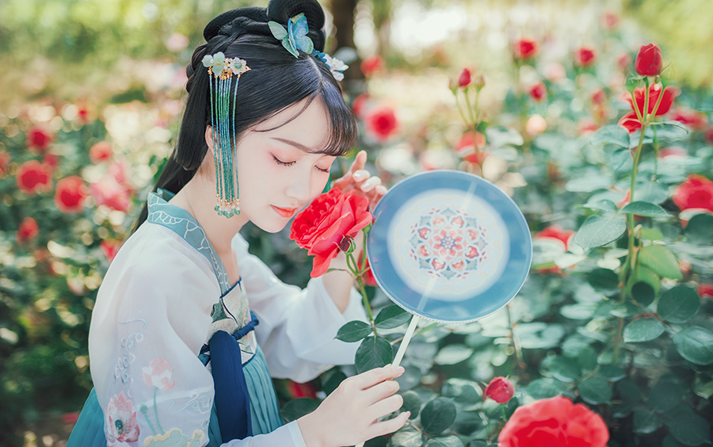

Chengdu has a long history, there is "the country of heaven", "Suhang" in Bashu(which means Sicuan, and Suhang is a very beatiful scenic spots in china ). Chengdu's cultural temperament has multiple, quaint and elegant legacy, fashion
and openness, but also HainaBaichuan (HaiNaBaiChuan is a Chinese Word which means tolerance of everything & taoist yin yang balance culture ☯️)'s mind, which is Chengdu's unique charm of classical in the modern. If you want to sum
it up in one word, it's leisure.
In recent years, Chengdu changes too fast, the city is getting bigger and bigger, a little soul can't keep up with the feeling. Zhao Lei's song "Chengdu", it seems to have only stayed in the past a feeling, in some ways, Chengdu is no
longer the original that Chengdu. Here are 8 characteristic cultures in Chengdu, which one do you like best? 🇨🇳

01 Teahouse culture
Chengdu people love to drink tea, love to sitting in teahouse for a rest, order a cup of tea to take a nap or read idle books, or put together a piece of fighting landlords(which means a poker game), this is Chengdu's teahouse culture,
and, a lot of hi business is in the teahouse! The story in Chengdu teahouse is like "the water of the Yellow River, endless".

02 Mahjong culture
Chengdu people love mahjong, for Chengdu people, there's nothing more enjoyable about life than playing mahjong all afternoon. There was a joke that said that on a plane, you can hear the sound of mahjong in Chengdu.

03 Embroidery culture
Sichuan Su Embroidery(Chinese Word is SuXiu '蜀绣'), also known as Chuanxiu, is a national intangible cultural heritage. With Su embroidery(苏州苏绣), Xiang embroidery(湖南湘绣), Guangdong embroidery(广东粤绣), one of China's four famous Embroidery
tech. Sheep Spring Festival Evening(Chinese New Year Gala), embroidery culture communication ambassador Li Yuchun a beautiful "Embroidery(Chinese pop music)" so far yuyin around the beam.

04 Sichuan Opera Culture
Sichuan opera is a feature of Chengdu culture in Sichuan. When it comes to Sichuan drama, people will immediately think of the god of Sichuan opera - change their face.
The fastest time to change a face was held by the famous Sichuan opera master Peng Denghuai, who changed 14 Faces in 25 seconds in a performance, turned them into the 9th and then turned them back into four faces. Sichuan's dramatic change
of face is well-known at home and abroad.

05 Wine culture
Sichuan has many famous wines and is included in the world's Guinness Book of Wines. Chengdu's Water Wells(水井坊) is the site of a Yuan Ming and Qing Dynasty(元明清 Ancient Chinese Dynasties about 1270-1890 A.D ) Sichuan wine old burning house,
as the source of Chinese liquor, its historical value is comparable to the "Qin Shihuang Terracotta Warriors."
Chengdu, since ancient times has been rich in wine, it is said that many of the country's famous wine pulp are from Chengdu, of course, Sichuan's wine culture is more rich, belong to the Sichuan wine Yunnan tobacco said.

06 Hot pot culture
Hot pot, is the chengdu people's common meal, but also foreigners to Chengdu must eat food, no spicy not happy, no hot pot not Chengdu.
What can't be solved with a hot pot, then two meals!
These foreign dignitaries visit Chengdu, the necessary dish is Chengdu hot pot, British Prime Minister David Cameron, German Chancellor Angela Merkel and so on ate Chengdu hot pot is also praise.

07 Panda culture
When you talk about the Great Tang Dynasty, you think of the ancient city of Xi'an; When I saw the statue of the Statue of Liberty on the plane, I knew new York was here... When it comes to Chengdu, people naturally think of pandas.
Big dark circles, fat tuo body, the iconic inner eight-word walking way, Mengbao(萌宝 Chinese word means very cute and very lovely) giant panda is one of the world's most lovely animals.
As long as you talk about giant pandas, it pulls the world closer to Chengdu's emotions and distance. The image of the giant panda is true, friendly and friendly, at leisure, calm and gentle and full of rei spirit.

08 Han clothing culture
In recent years, Han clothing culture has formed a new trend among young people. And Chengdu, as a star of the Chinese fashion circle, in the streets of Chengdu, we can also see many young people wearing beautiful Chinese clothes to show
the unique classical beauty of Chinese culture. Waist-skirts, flying sleeves, red lips... Beautiful young girls, wearing ancient Chinese costumes at the Han Festival, dance and display Chinese classical aesthetics with moving dances.
